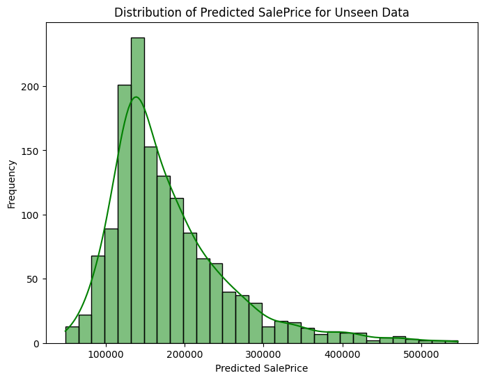

Creating the submission#
import os
import joblib
import pandas as pd
import matplotlib.pyplot as plt
import seaborn as sns
from sklearn.preprocessing import OneHotEncoder
Conclusion for submission#
Based on the tests that were conducted the xgboost_model_1 was the most accurate.
The following variables were used in the modelling:
OverallQual
InternalSF
GrLivArea
GarageCars
GarageArea
FullBath
YearBuilt
TotalBsmtSF
YearRemodAdd
1stFlrSF
BsmtFinSF1
LotArea
LotFrontage
Fireplaces
OverallCond
ExterQual_TA
Neighborhood_Price_Bucket_Level_1
Neighborhood_Price_Bucket_Level_4
KitchenQual_Gd
Neighborhood_Price_Bucket_Level_3
# Import the data
df = pd.read_csv('raw_data/test.csv')
# Show the first 5 rows of the data
df.head(5)
| Id | MSSubClass | MSZoning | LotFrontage | LotArea | Street | Alley | LotShape | LandContour | Utilities | ... | ScreenPorch | PoolArea | PoolQC | Fence | MiscFeature | MiscVal | MoSold | YrSold | SaleType | SaleCondition | |
|---|---|---|---|---|---|---|---|---|---|---|---|---|---|---|---|---|---|---|---|---|---|
| 0 | 1461 | 20 | RH | 80.0 | 11622 | Pave | NaN | Reg | Lvl | AllPub | ... | 120 | 0 | NaN | MnPrv | NaN | 0 | 6 | 2010 | WD | Normal |
| 1 | 1462 | 20 | RL | 81.0 | 14267 | Pave | NaN | IR1 | Lvl | AllPub | ... | 0 | 0 | NaN | NaN | Gar2 | 12500 | 6 | 2010 | WD | Normal |
| 2 | 1463 | 60 | RL | 74.0 | 13830 | Pave | NaN | IR1 | Lvl | AllPub | ... | 0 | 0 | NaN | MnPrv | NaN | 0 | 3 | 2010 | WD | Normal |
| 3 | 1464 | 60 | RL | 78.0 | 9978 | Pave | NaN | IR1 | Lvl | AllPub | ... | 0 | 0 | NaN | NaN | NaN | 0 | 6 | 2010 | WD | Normal |
| 4 | 1465 | 120 | RL | 43.0 | 5005 | Pave | NaN | IR1 | HLS | AllPub | ... | 144 | 0 | NaN | NaN | NaN | 0 | 1 | 2010 | WD | Normal |
5 rows × 80 columns
# Show the features in the data that have missing values and the number of missing values
missing_values = df.isnull().sum()
missing_values = missing_values[missing_values > 0]
# Get the data types of the features with missing values
missing_values_data_types = df.dtypes[missing_values.index]
# Combine the missing values and data types into a single DataFrame
missing_values_info = pd.DataFrame({'Missing Values': missing_values, 'Data Type': missing_values_data_types})
print(missing_values_info)
Missing Values Data Type
MSZoning 4 object
LotFrontage 227 float64
Alley 1352 object
Utilities 2 object
Exterior1st 1 object
Exterior2nd 1 object
MasVnrType 894 object
MasVnrArea 15 float64
BsmtQual 44 object
BsmtCond 45 object
BsmtExposure 44 object
BsmtFinType1 42 object
BsmtFinSF1 1 float64
BsmtFinType2 42 object
BsmtFinSF2 1 float64
BsmtUnfSF 1 float64
TotalBsmtSF 1 float64
BsmtFullBath 2 float64
BsmtHalfBath 2 float64
KitchenQual 1 object
Functional 2 object
FireplaceQu 730 object
GarageType 76 object
GarageYrBlt 78 float64
GarageFinish 78 object
GarageCars 1 float64
GarageArea 1 float64
GarageQual 78 object
GarageCond 78 object
PoolQC 1456 object
Fence 1169 object
MiscFeature 1408 object
SaleType 1 object
import pandas as pd
# Replace NaN values in numerical columns with median
df.fillna({col: df[col].median() for col in df.select_dtypes(include=['number']).columns}, inplace=True)
# Replace NaN values in object columns with 'Not Applicable'
df.fillna({col: 'Not Applicable' for col in df.select_dtypes(include=['object']).columns}, inplace=True)
# Display confirmation of completion
print("NaN values replaced: Numerical columns -> Median, Object columns -> 'Not Applicable'")
NaN values replaced: Numerical columns -> Median, Object columns -> 'Not Applicable'
# Check that there are in fact no missing values in the data
missing_values = df.isnull().sum()
missing_values = missing_values[missing_values > 0]
# Get the data types of the features with missing values
missing_values_data_types = df.dtypes[missing_values.index]
# Combine the missing values and data types into a single DataFrame
missing_values_info = pd.DataFrame({'Missing Values': missing_values, 'Data Type': missing_values_data_types})
print(missing_values_info)
Empty DataFrame
Columns: [Missing Values, Data Type]
Index: []
# Create a feature called InternalSF
df['InternalSF'] = df['1stFlrSF'] + df['2ndFlrSF'] + df['TotalBsmtSF']
# Create PorchDeckSF feature
df['PorchDeckSF'] = df['OpenPorchSF'] + df['EnclosedPorch'] + df['3SsnPorch'] + df['ScreenPorch'] + df['WoodDeckSF']
neighborhood_price_mapping = {
'OldTown': 'Level_1', 'BrkSide': 'Level_1', 'IDOTRR': 'Level_1', 'MeadowV': 'Level_1', 'Edwards': 'Level_1', 'BrDale': 'Level_1',
'Mitchel': 'Level_2', 'Sawyer': 'Level_2', 'NAmes': 'Level_2', 'NPkVill': 'Level_2', 'SWISU': 'Level_2', 'Blueste': 'Level_2',
'CollgCr': 'Level_3', 'NWAmes': 'Level_3', 'SawyerW': 'Level_3', 'Gilbert': 'Level_3', 'ClearCr': 'Level_3', 'Blmngtn': 'Level_3',
'Veenker': 'Level_4', 'Crawfor': 'Level_4', 'NoRidge': 'Level_4', 'Somerst': 'Level_4', 'NridgHt': 'Level_4', 'Timber': 'Level_4', 'StoneBr': 'Level_4'
}
# Apply the mapping to the test dataset
df['Neighborhood_Price_Bucket'] = df['Neighborhood'].map(neighborhood_price_mapping)
# Check there these are no missing values in the 'neighborhood_price_bucket' column
df['Neighborhood_Price_Bucket'].isnull().sum()
0
# Identify categorical columns (excluding 'SalePrice')
categorical_cols = df.select_dtypes(include=['object']).columns.tolist()
# Separate categorical and continuous data
categorical_data = df[categorical_cols]
continuous_data = df.drop(columns=categorical_cols, errors='ignore')
# Function to encode categorical columns
def encode_columns(df, cols_to_encode):
ohe = OneHotEncoder(sparse_output=False, handle_unknown='ignore') # Avoids errors from unseen categories
df_encoded = df.copy()
for col in cols_to_encode:
Xd = ohe.fit_transform(df_encoded[[col]]) # One-hot encode the column
unique_values = ohe.categories_[0] # Get unique category names
new_cols = [f"{col}_{val}" for val in unique_values] # Create new column names
# Create a new DataFrame for encoded columns
df_ohe = pd.DataFrame(Xd, columns=new_cols, index=df_encoded.index)
# Concatenate with the original DataFrame
df_encoded = pd.concat([df_encoded, df_ohe], axis=1)
# Drop original categorical columns
df_encoded.drop(cols_to_encode, axis=1, inplace=True)
return df_encoded
# Encode the categorical dataset
df_encoded = encode_columns(categorical_data, categorical_cols)
# Merge encoded categorical data with continuous data
df_final = pd.concat([continuous_data, df_encoded], axis=1)
# View the first 5 rows of the final dataset
df_final.head()
| Id | MSSubClass | LotFrontage | LotArea | OverallQual | OverallCond | YearBuilt | YearRemodAdd | MasVnrArea | BsmtFinSF1 | ... | SaleCondition_Abnorml | SaleCondition_AdjLand | SaleCondition_Alloca | SaleCondition_Family | SaleCondition_Normal | SaleCondition_Partial | Neighborhood_Price_Bucket_Level_1 | Neighborhood_Price_Bucket_Level_2 | Neighborhood_Price_Bucket_Level_3 | Neighborhood_Price_Bucket_Level_4 | |
|---|---|---|---|---|---|---|---|---|---|---|---|---|---|---|---|---|---|---|---|---|---|
| 0 | 1461 | 20 | 80.0 | 11622 | 5 | 6 | 1961 | 1961 | 0.0 | 468.0 | ... | 0.0 | 0.0 | 0.0 | 0.0 | 1.0 | 0.0 | 0.0 | 1.0 | 0.0 | 0.0 |
| 1 | 1462 | 20 | 81.0 | 14267 | 6 | 6 | 1958 | 1958 | 108.0 | 923.0 | ... | 0.0 | 0.0 | 0.0 | 0.0 | 1.0 | 0.0 | 0.0 | 1.0 | 0.0 | 0.0 |
| 2 | 1463 | 60 | 74.0 | 13830 | 5 | 5 | 1997 | 1998 | 0.0 | 791.0 | ... | 0.0 | 0.0 | 0.0 | 0.0 | 1.0 | 0.0 | 0.0 | 0.0 | 1.0 | 0.0 |
| 3 | 1464 | 60 | 78.0 | 9978 | 6 | 6 | 1998 | 1998 | 20.0 | 602.0 | ... | 0.0 | 0.0 | 0.0 | 0.0 | 1.0 | 0.0 | 0.0 | 0.0 | 1.0 | 0.0 |
| 4 | 1465 | 120 | 43.0 | 5005 | 8 | 5 | 1992 | 1992 | 0.0 | 263.0 | ... | 0.0 | 0.0 | 0.0 | 0.0 | 1.0 | 0.0 | 0.0 | 0.0 | 0.0 | 1.0 |
5 rows × 298 columns
# Load the saved model
model = joblib.load('models/xgboost_model_1.pkl')
# Ensure no duplicate columns in df_final
df_final = df_final.loc[:, ~df_final.columns.duplicated()]
# Keep 'Id' column separately (if it exists)
if 'Id' in df_final.columns:
id_column = df_final[['Id']].copy() # Preserve the original Id column
else:
id_column = None # Handle cases where Id is missing
# Select relevant features for prediction (excluding Id)
features = ['OverallQual', 'InternalSF', 'GrLivArea', 'GarageCars', 'GarageArea', 'FullBath', 'YearBuilt', 'TotalBsmtSF',
'YearRemodAdd', '1stFlrSF', 'BsmtFinSF1', 'LotArea', 'LotFrontage', 'Fireplaces', 'OverallCond', 'ExterQual_TA',
'Neighborhood_Price_Bucket_Level_1', 'Neighborhood_Price_Bucket_Level_4', 'KitchenQual_Gd', 'Neighborhood_Price_Bucket_Level_3']
unseen_df = df_final[features].copy()
# Make predictions on unseen data
unseen_predictions = model.predict(unseen_df)
# Store predictions in DataFrame
df_final['Predicted_SalePrice'] = unseen_predictions
# Ensure only one Id column is present
if id_column is not None and 'Id' not in df_final.columns:
df_final = pd.concat([id_column, df_final], axis=1)
# Plot distribution of predicted SalePrice values
plt.figure(figsize=(8, 6))
sns.histplot(unseen_predictions, bins=30, kde=True, color='green')
plt.xlabel("Predicted SalePrice")
plt.ylabel("Frequency")
plt.title("Distribution of Predicted SalePrice for Unseen Data")
plt.show()

# Create a data frame with the 'Id' and 'Predicted_SalePrice' columns
submission = df_final[['Id', 'Predicted_SalePrice']].copy()
# Rename the 'Predicted_SalePrice' column to 'SalePrice'
submission.rename(columns={'Predicted_SalePrice': 'SalePrice'}, inplace=True)
# Save the submission data frame to a CSV file
submission.to_csv('outputs/submission.csv', index=False)